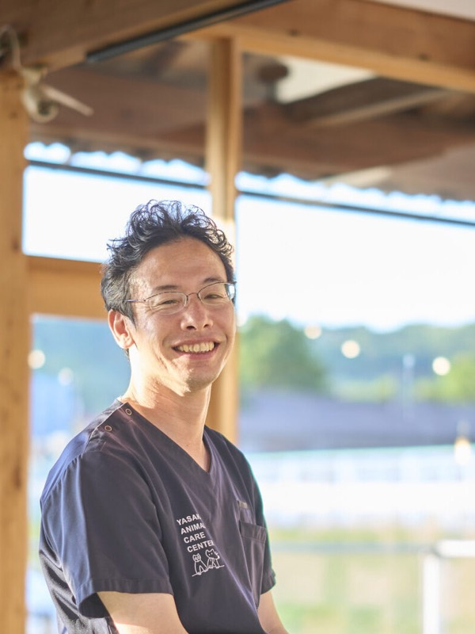
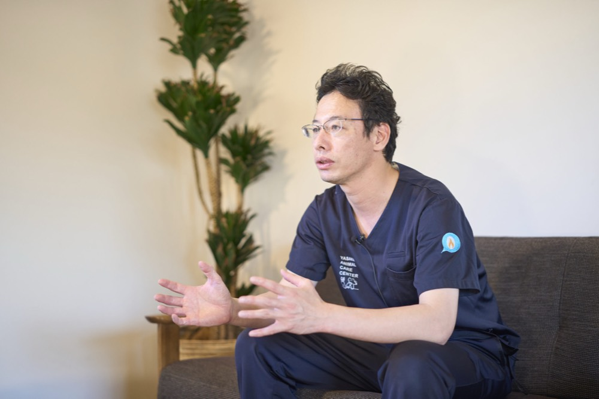
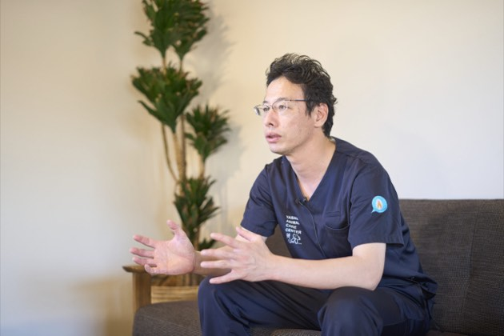
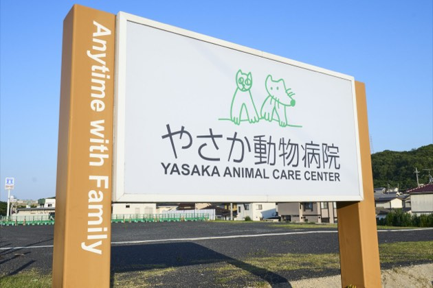
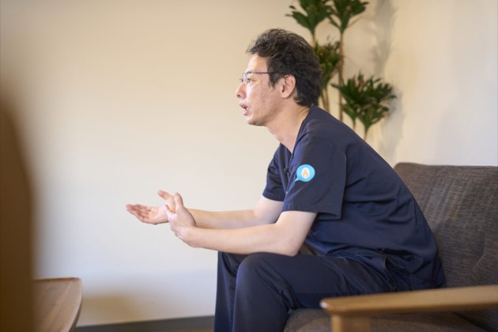
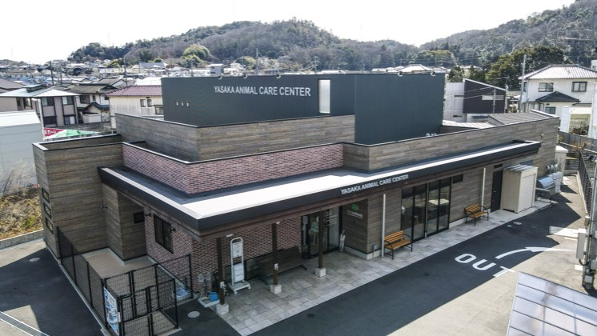
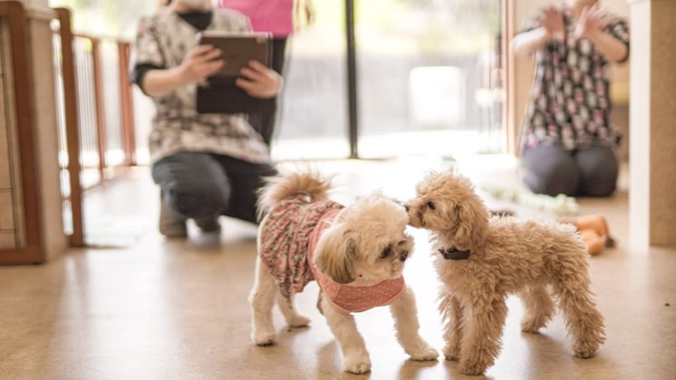
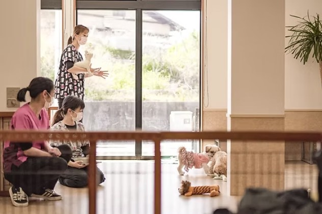
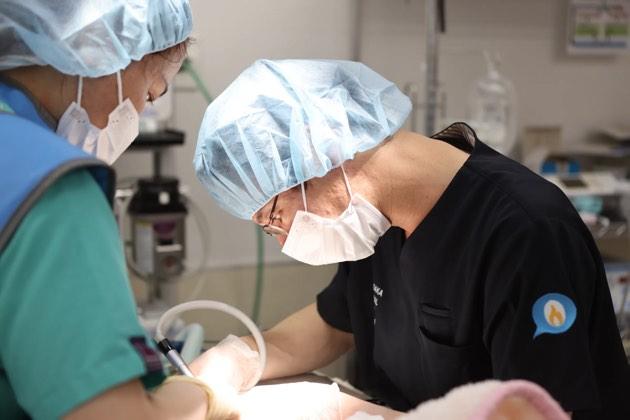
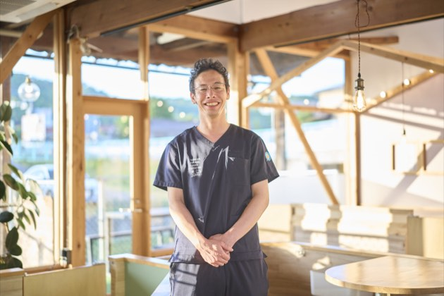

岡山から築く人と動物の豊かな共生社会
大石 太郎taro ohishi
やさか動物病院 院長
岡山県出身。酪農学園大学を卒業後、京都や大阪の動物病院で臨床修業を積む。2012年に帰郷し、やさか動物病院に勤務。2015年に院長に就任、2017年には新病院を設立した。現在は株式会社OneVETの代表取締役も務め、総社市のだて動物病院との合併を経て組織を発展させている。最先端の2次診療に加え、カフェやドッグランを併設した「トータルケアができる動物病院」として地域医療の向上に邁進している。
企業サイトを見るCHAPTER 01
高度医療とトータルケアの融合、そして合併への想い

Qやさか動物病院の特徴と、他院にはない強みを教えてください。
A当院は、単に動物の病気を治すだけでなく、人と動物が暮らす上での「トータルケア」ができる動物病院を目指しています。治療だけでなく、カフェやドッグラン、トリミング、パピークラス、ペットホテルなど、暮らしを支える多様なサービスをワンストップで展開している点が特徴です。
医療面ではCT検査機器を備えた「2次診療」に対応しており、私が得意とする腎泌尿器科のほか、眼科疾患を専門とする獣医師も在籍しています。元々は母親が「トータルケアができる病院」の概念の基盤を作ってくれたのですが、2015年に私が院長を引き継いでからは、高度な先進医療もカバーできる体制へと進化させました。日々のケアから万が一の重症対応まで、すべてを安心して任せられる環境こそが私たちの強みです。
Q株式会社OneVETとして、他の動物病院と合併された経緯を教えてください。
A総社市にある「だて動物病院」の伊達成寿院長と合併し、株式会社OneVETという一つの会社として共同代表の形で運営しています。お財布を一緒にして組織を法人化した背景には、動物病院業界に海外資本をはじめとする大手企業の参入が急速に進んでいる現状があります。行き過ぎた資本主義の波にのまれて医療の質が歪むのを防ぐためには、地元の獣医師が主導して経営していく形が理想的だと考えました。
また、獣医師や動物看護師という職業には「就業寿命」の課題があります。若手のうちは2次診療でバリバリと腕を磨きたい、年齢を重ねてからは予防を中心とした1次診療でじっくり貢献したい、といった多様なニーズに対し、岡山県内で複数の選択肢を提供できる強固なグループを作りたいという想いもありました。将来的には、さらに多くの志を同じくする病院とも手を取り合っていきたいです。
CHAPTER 02
病気から「暮らし」へ、目線の転換をもたらした原体験
Q獣医療において最も大切にされている信念は何ですか。
A私たちの本質的な仕事は、病気を治すことの先にある「喜びを創ること」です。実は、獣医師になったばかりの頃の私は「病気を見つけること」や「治療を成功させること」自体に楽しさを感じており、完全に目線が「病気」そのものに向いていました。
その視点を大きく変えてくれたのが、犬のイベント「しっぽいち」への参加でした。緊急対応用獣医師として参加したのですが、そこで目にしたのは、家族もワンちゃんも全員が本当に楽しそうに笑顔で過ごしている光景だったのです。「この人たちの幸せな暮らしを守ることこそが僕たちの本当の仕事なんだ」と、目線が「暮らし」へと転換しました。 新婚旅行でフィンランドを訪れた際にも、街の至る所にドッグランがあり、ショップで犬が当たり前のように静かに座って待っている理想の共生社会を見て強い衝撃を受けました。岡山もいつかこうした豊かな国にしたいと強く願っています。
Q岡山という地域における、獣医師同士の連携の強さについてお聞かせください。
A岡山県の獣医療業界の最大の強みは、動物病院の先生方の「仲が非常に良い」という点にあります。都会では限られたパイを取り合う形になりがちですが、岡山では地域全体で連携して動物たちを救おうという素晴らしい土壌があります。例えば、骨折などの整形外科ならあの先生、神経疾患ならこの先生、といったように、それぞれの得意分野に応じてお互いに信頼して紹介し合える文化があるのです。
実際に、岡山県における獣医師会の加入率は約98%に達しており、これは他県と比べても圧倒的な数字です。この強固なネットワークがあるからこそ、「岡山で受けられない獣医療はなくしたい」という強い想いで勉強会を立ち上げ、地域全体の医療レベルを底上げしていくことができています。私たちの経営理念である「動物愛・人間愛・地元愛」に基づき、地域の先生方と手を取り合って岡山を日本一人と動物が暮らしやすい国にすることが私の大きな夢です。








CHAPTER 03
母の背中を追った過去とこれからの先進医療への挑戦
Qそもそも獣医師を目指されたきっかけは何だったのでしょうか。
A一番の理由は、やはり同じく開業獣医師であった母親の存在です。私の家庭は父親も農林水産省に勤める公務員の獣医師という環境でしたが、両親が離婚した後は母親が女手一つで院長として病院を切り盛りしていました。
Q2017年に新しい病院を建てられた際、どのような想いや課題感があったのですか。
A2017年に現在の新しい病院を建てた背景には、当時の岡山市内には「CT検査機器」を備えた動物病院がまだ存在しなかったという明確な課題感がありました。当時はミニチュアダックスフンドの流行に伴って椎間板ヘルニアの症例が急増しており、高度な画像診断機器の必要性が叫ばれていました。それまでの医療では、お腹の中に腫瘍などの怪しい影が見つかっても「まずは開けてみないと分からない」という手術にならざるを得ない側面があったのです。
事前にCTで血管の走行や腫瘍の位置を正確に把握できれば、詳細な手術計画を事前に立てて安全に治療を行うことができます。「この地方都市だからこそ絶対にCTが必要だ」という強い信念で施設を整えました。現在、当院には8名の獣医師が在籍していますが、地域の先生方みんなが集まってCTを活用し、合同で難しい手術を行えるような「地域の医療拠点」にしたいと考えています。また、近年では行政と連携し、岡山市が保護した野犬をトレーニングして新しい家族へと譲渡する事業のサポートなど、地域の課題解決にもわずかながら協力させていただいています。